La Noche Larga cayó sobre el Paraguay. Vos sos quien la enfrenta.
La mitología guaraní, hecha juego. Cinco razas, siete sets por raza, alas y doce tierras reales del país, con los siete hijos de Tau y Kerana esperando en cada una.
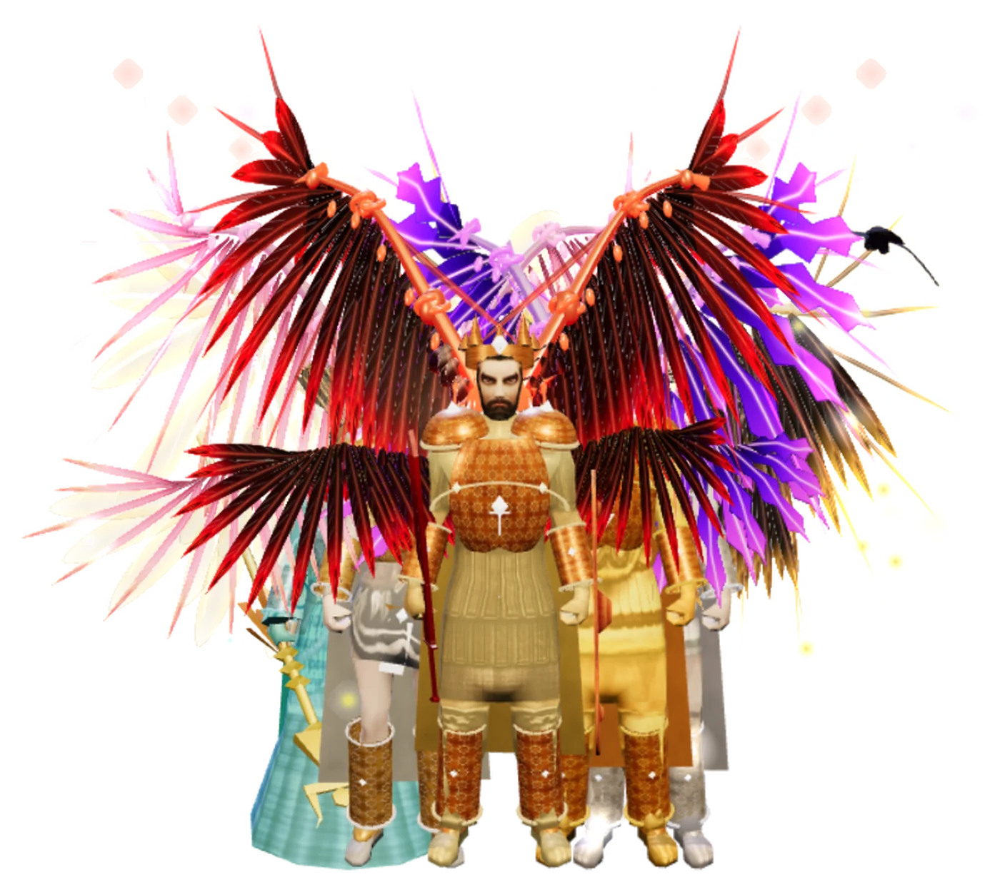
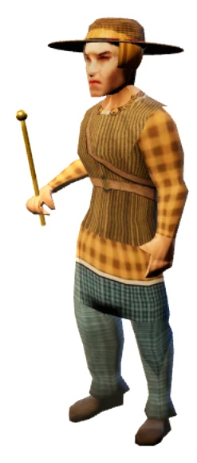
Las leyendas que nos contaron las abuelas, para jugarlas
Pombero, Jasy Jateré, Luisón, Kurupí y los demás, como los describe el mito.
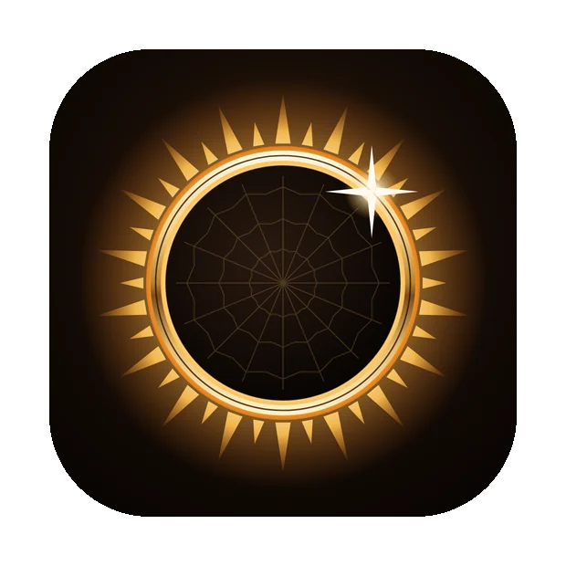
Jugalo en el celular, en la PC o en el navegador
La misma cuenta en todos los dispositivos.
Nuestra mitología, para jugarla
Crecimos escuchando del Pombero, del Jasy Jateré y del Luisón, pero casi nunca los vimos en un juego. NOX nace de esas ganas: que las leyendas se puedan recorrer, pelear y descubrir, desde Paraguay y con respeto por el mito.
Cinco razas, cinco formas de pelear
Caballero, Hechicero, Arquera, Gladiador y Mburuvicha. Cada uno con sus estadísticas, sus técnicas con nombre en guaraní y su evolución.
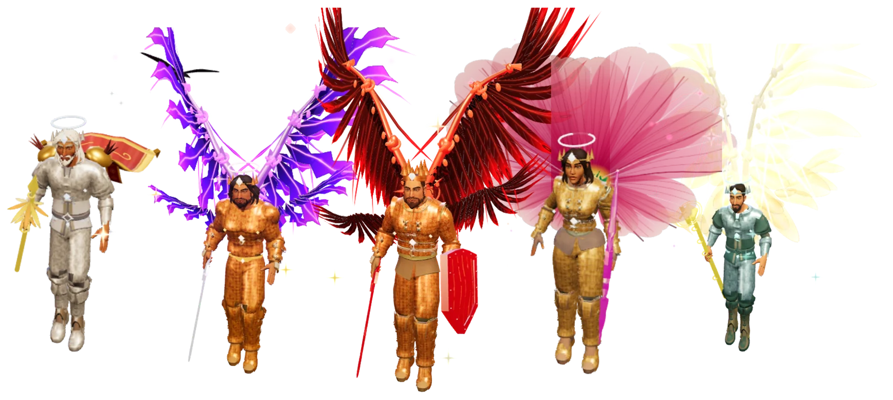
Siete sets por raza, de +0 a +15
Armaduras con nombres de dioses guaraníes: Kuarahy, Jasy, Tupã, Arasy, Ñamandu. Se forjan con gemas y a partir de +4 se encienden con el color de su set.
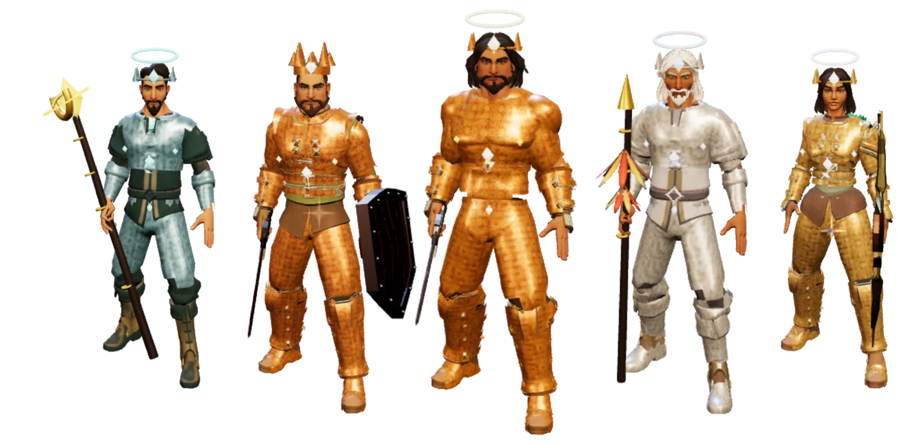
Alas con forma propia para cada raza
Plumas, membranas, hojas de palma y cintas de ñandutí. Cuatro etapas de brillo y dos generaciones más que se forjan en el Caldero de Kerana.
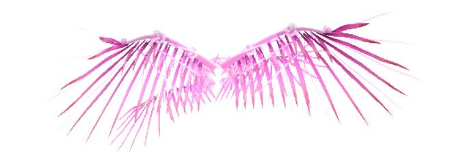
Armas, gemas y piezas únicas
Espadas, bastones, arcos y cetros, uno por set. Gemas que suben tus ítems, pociones de Ña Eusebia, mascotas que te siguen y las piezas únicas que suelta cada bestia.
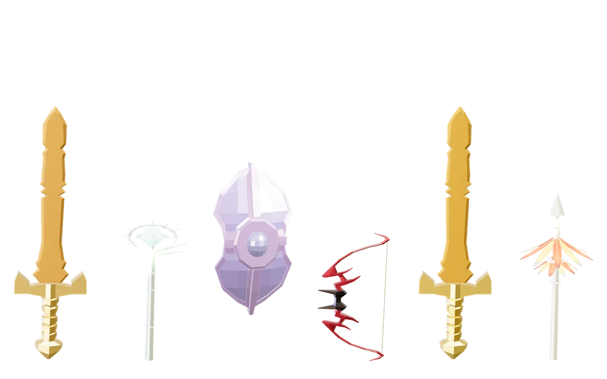
Doce tierras reales, de Asunción a Salto Cristal
Ypacaraí, Trinidad, el Chaco Boreal, los Esteros del Ñeembucú, el Ybytyruzú, el Monday, el Mbaracayú, Cerro Corá, Bahía Negra, los Saltos del Mbocaruzú y Salto Cristal, cada una con su luz, su paisaje y sus bestias.
Treinta y siete criaturas, como las cuenta el mito
Teju Jagua con sus siete cabezas de perro, Mbói Tu'i con cabeza de loro, Moñái con sus cuernos, el Pombero, la Ka'a Jarýi, el Yaguarú y el Luisón. Cada una espera en su tierra.
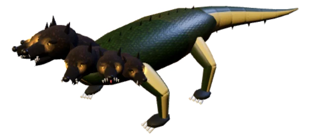
La noche en que Tau se llevó a Kerana
Arasy maldijo esa unión y de ella nacieron siete hijos monstruosos. Cuando nació el séptimo, el sol siguió saliendo pero ya no alumbraba igual. Los escribas lo anotaron con una sola palabra: NOX.
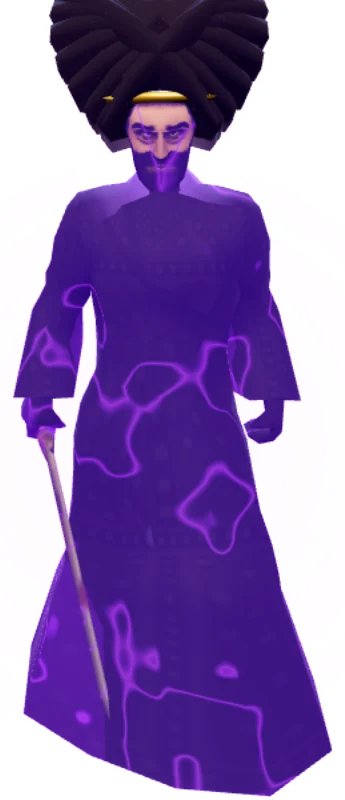
Capturas del juego real
Sin retoques: Asunción, las tierras del reino, las cinco razas con sus alas y los hijos de Tau, tal como se ven al jugar.
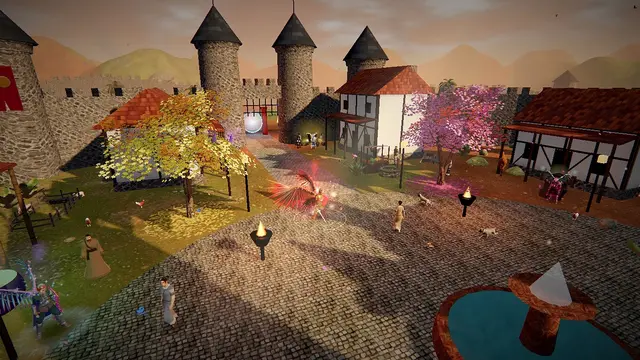
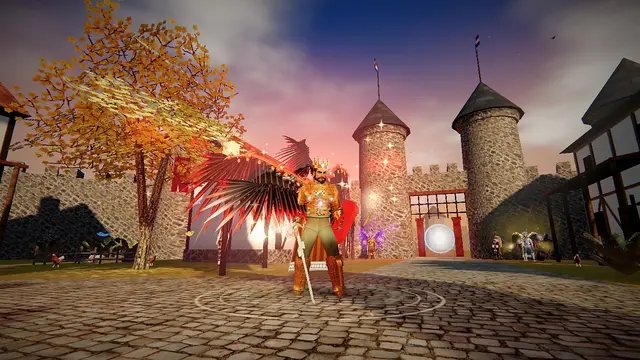
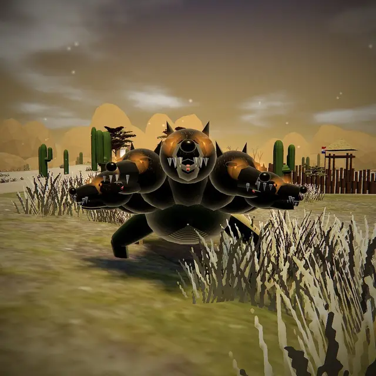
Descargá NOX y entrá en la noche
Elegí tu dispositivo para ver cómo instalarlo. Es el mismo juego y la misma cuenta en el celular, en la PC y en el navegador.
¿Ya tenés cuenta? Mi cuenta Tienda · Un juego de GeorgeElHumano · The BnKr Media
Seguinos en @noxonlinepy